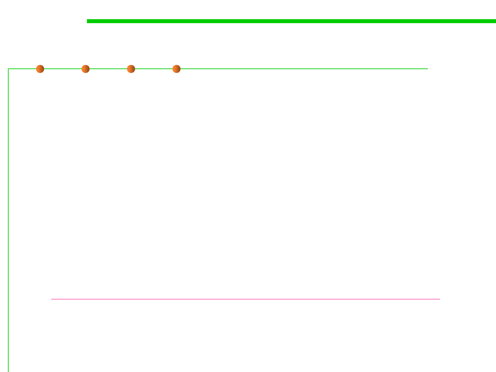

Static program analysis
9.1 Code Smells Refactoring
▪ Static program analysis is the analysis of computer software that is
performed without actually executing programs
– It is performed by an automated tool with human analysis.
– Useful for program understanding, program comprehension, or code
review (software inspections and software walkthroughs).
▪ 30%-70% errors and defects can be identified by static program
analysis.
▪ Techniques: defect pattern matching, type inference, model checking,
data-flow analysis, symbolic execution, etc.
▪ Tools for static program analysis:
– https://en.wikipedia.org/wiki/List_of_tools_for_static_code_analysis